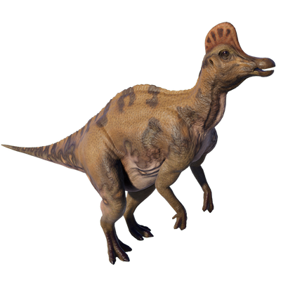

Useful Website
Named after the distinctive crest on the top of its head – Corythosaurus translates to ‘helmet lizard’ – this herbivorous Hadrosaurid lived around 75m years ago during the Late Cretaceous period. Corythosaurus weighed around four tonnes and grew up to 10m in length, making it one of the largest Hadrosaurids, with a bill-shaped snout and thousands of small teeth for chewing through tough vegetation.
